Print layout
Page designs from the Sacramento Business Journal, The Virginian-Pilot and Elon News Network
(click images to enlarge)
Sacramento Business Journal
Sacramento's fastest growing companies

Page design and photo illustration When thinking of ways to show the growth of companies, plants were a recurring theme. So I decided to reunite how we measure company growth (in money) with a typical picture of growth (plants). Hence, money plants
Elon News Network
Diversifying the decision
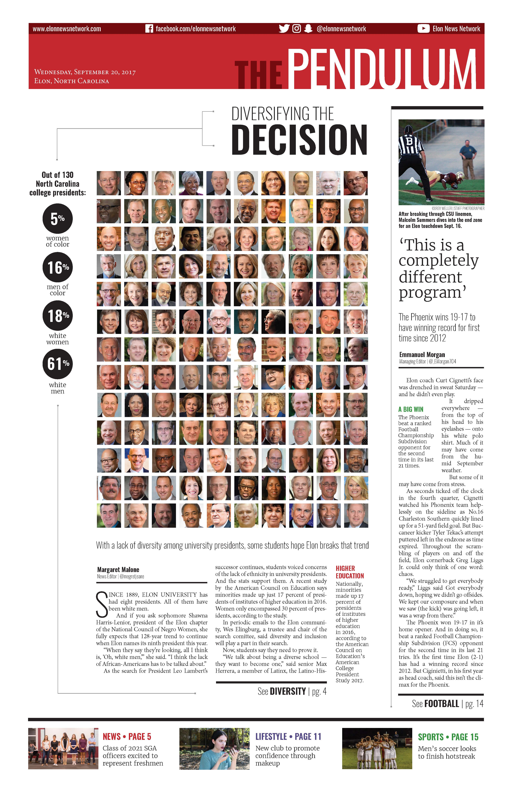Page design | This article focused on the racial and gender diversity of college presidents in North Carolina.
First place from the Michigan State University Society for News Design for front page design
Second place from the Associated Collegiate Press for front page design
Second place from the North Carolina College Media Association for single- or two-page design
The Virginian-Pilot
Piling Up

Page design and illustration | This article was about baseball players responding (or not responding) to fan mail. I created an illustration, wrote a corresponding headline and added baseball stamps and a stamp drop cap to link everything together.
First place from the Michigan State University Society for News Design for sports page design
Elon News Network
The war on mold
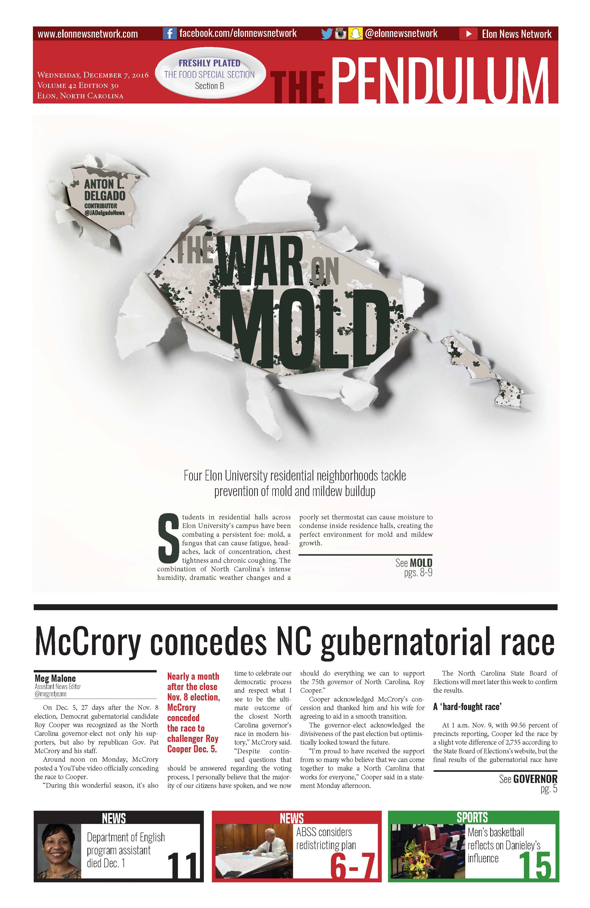Page design and photo illustration | There had been complaints of mold in Elon residence halls, but we had no photos, so I made the newspaper look as though it were being torn open as a result of mold.
Sacramento Business Journal
Best Real Estate Projects: Sawyer Tower/DoCo
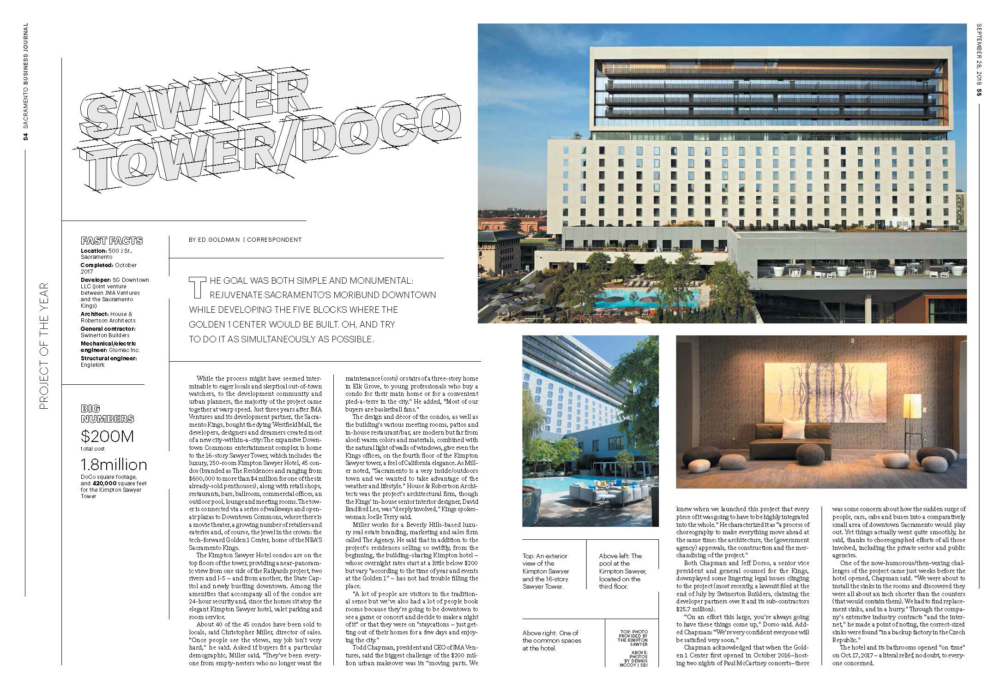Page design and typography | The text was handmade to look 3D and the entire special section was inspired by architectural line sketches.
Elon News Network
Uncovering Identity

Page design and photo illustration | There had been complaints of mold in Elon residence halls, but we had no photos, so I made the newspaper look as though it were being torn open as a result of mold.
Elon News Network
Best of 2017
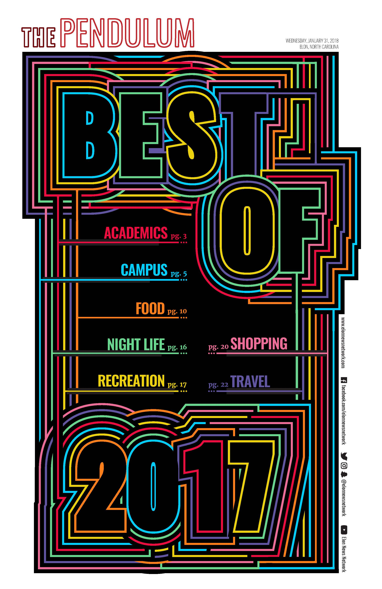Page design | This cover uses bold, neon colors and typography to catch people's eyes.
Honorable mention from the Michigan State University Society for News Design for front page design
Elon News Network
The Battery Man

Page design and photography | This article focuses on an Elon student who designs and builds his own electric motorcycles. The design is meant to show off the photos and his bikes while the glowing details and orange colors are reminiscent of welding sparks.
The web component of this won an honorable mention from the Associated Collegiate Press for Multimedia Feature. View it here
Elon News Network
The Battery Man

Page design and photography | This article focuses on an Elon student who designs and builds his own electric motorcycles. The design is meant to show off the photos and his bikes while the glowing details and orange colors are reminiscent of welding sparks.
The web component of this won an honorable mention from the Associated Collegiate Press for Multimedia Feature. View it here
Elon News Network
Phoenix in a haze
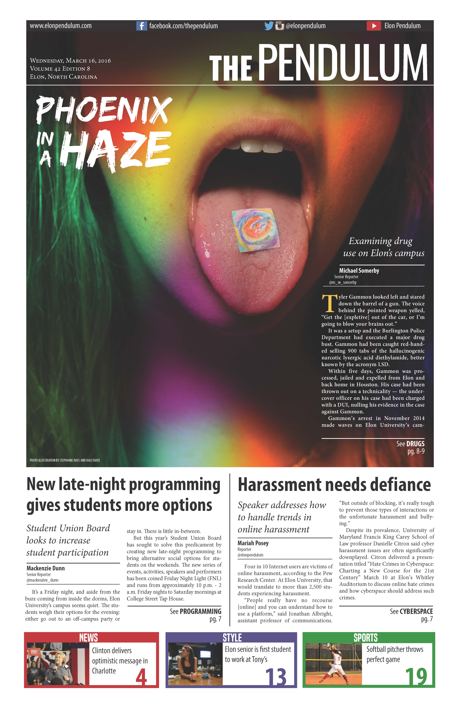Page design and photo illustration | This article starts with an anecdote about a student who was caught for distributing LSD. I staged a photo of a person with an Elon-themed tab of LSD on her tongue and then edited rainbow colors over the photo to give it a psychedelic effect.
National Mark of Excellence award from the Society of Professional Journalists for photo illustration
Honorable mention from the Michigan State University Society for News Design for front page design
First place from the North Carolina College Media Association for single- or two-page design
The Virginian-Pilot
Health care bill
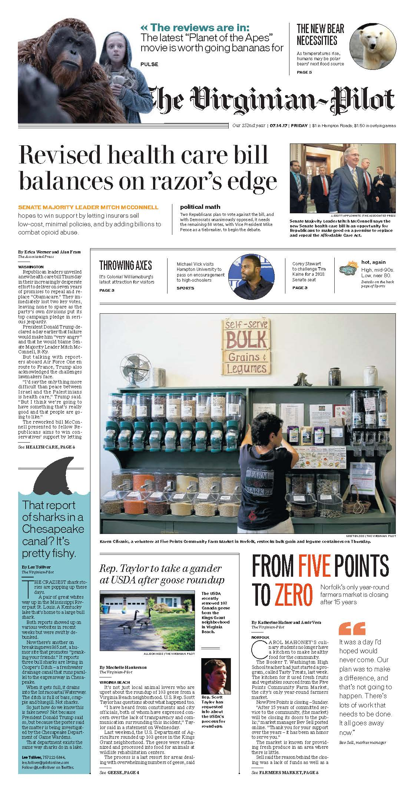Page layout This page balances a strong national news article about the healthcare bill with a more local story about a year-round farmers market that closed.
Elon News Network
Starting to grow
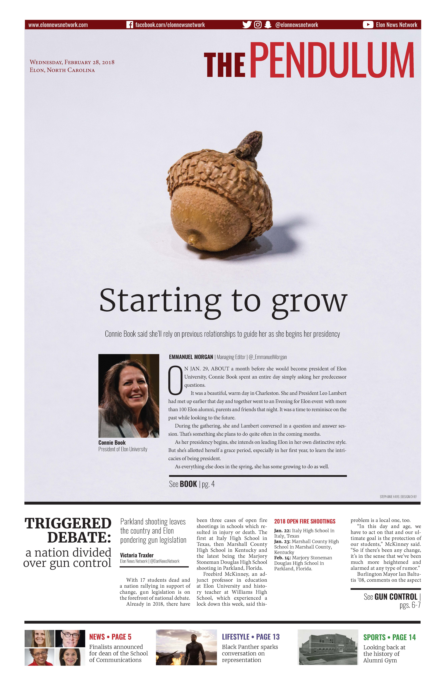Page design and photo illustration | As Elon's new president began her first week, I wanted to to use the metaphor of an acorn to show her new beginning since acorns and oaks are common themes across Elon's campus.
The Virginian-Pilot
High school sports rewind 2016-2017
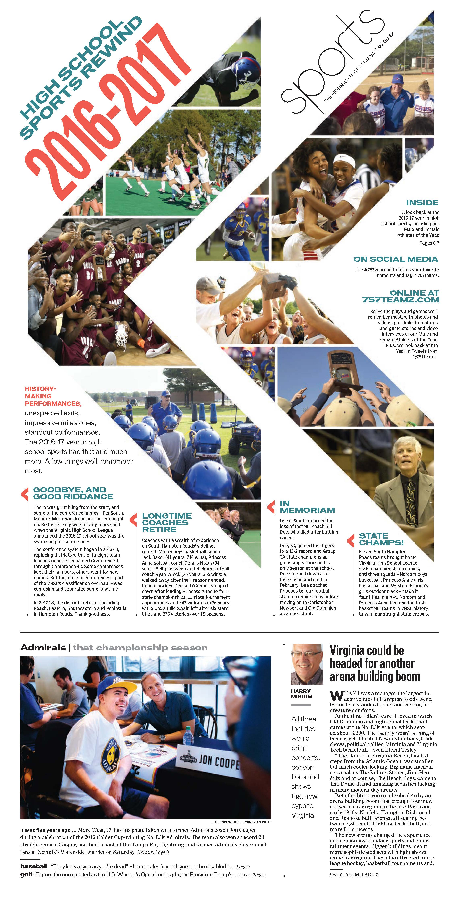Page design | After coming up with the idea that the look back on the year in sports was a "rewind," I decided to play off the rewind icon of two backward arrows and fill them with moments from the past year. Inside, I wanted the focus to be on the male and female athletes of the year and used blue, pink and the backward arrow to differentiate the sections.
The Virginian-Pilot
High school sports rewind 2016-2017

Page design | After coming up with the idea that the look back on the year in sports was a "rewind," I decided to play off the rewind icon of two backward arrows and fill them with moments from the past year. Inside, I wanted the focus to be on the male and female athletes of the year and used blue, pink and the backward arrow to differentiate the sections.
Elon News Network
"Hello, Dolly!"
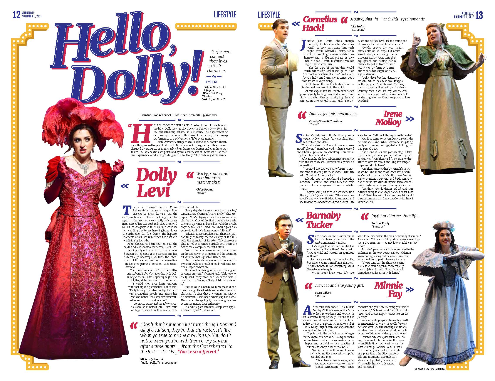Page design This article focused on how the actors in the musical "Hello, Dolly!" were similar to and different from their characters. I pulled inspiration from the musical for the typography and from the stage design for the border and colors. Cutouts of the characters and quotes from the actors accompanied the vignettes.
Third place from the College Media Association for feature page design
The Virginian-Pilot
Illuminating Stories
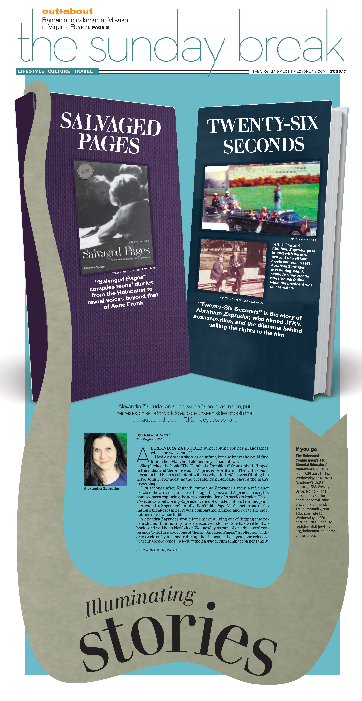Page design and illustration | This article focused on two different books by one author, so I displayed both pieces on book covers to highlight her work. To tie the page together, I created a long, winding bookmark that housed the headline and fact box.
Elon News Network
Back in the bracket
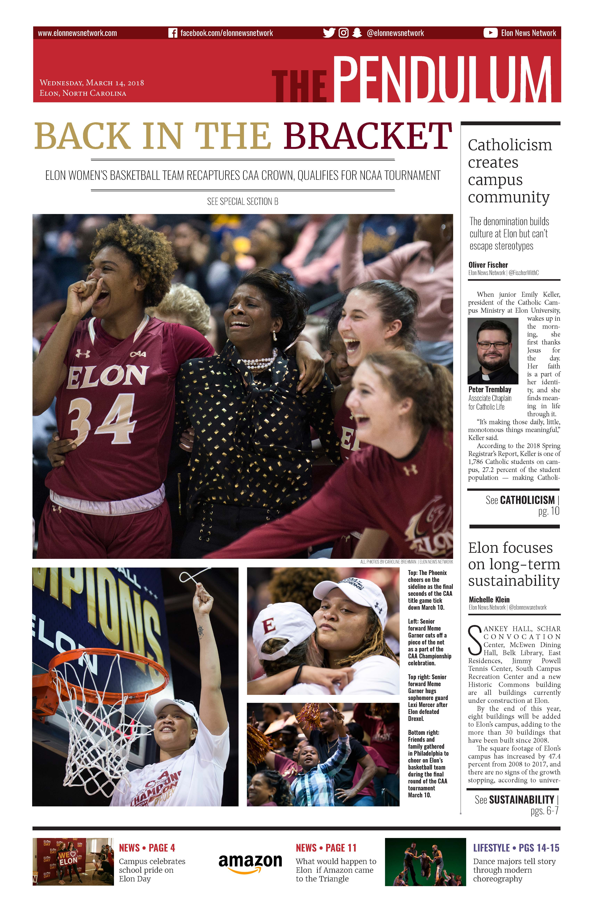Page layout | After Elon made it to the NCAA Tournament for the second year in a row.
The Virginian-Pilot
Out/In
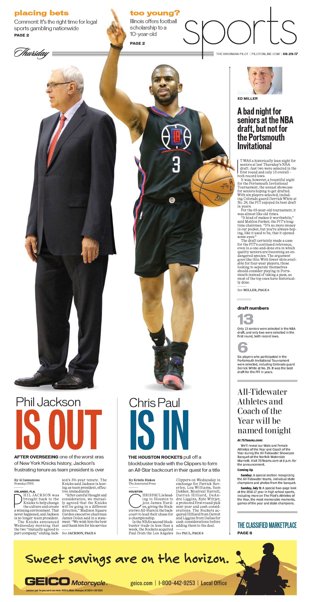Page layout
Elon News Network
The move-in edition
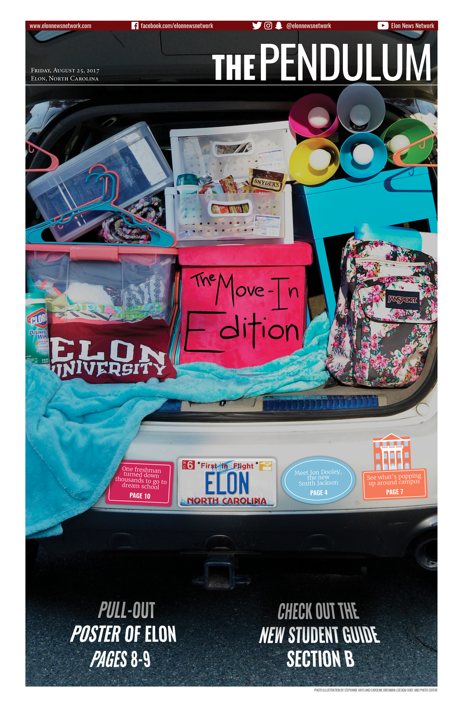Page design and photo illustration | A completely stuffed trunk is a staple of move-in day, so I wanted to create a version that showed off all the quintessential elements of a dorm room for the move-in edition.
Regional Mark of Excellence Award from the Society of Professional Journalists for photo illustration.